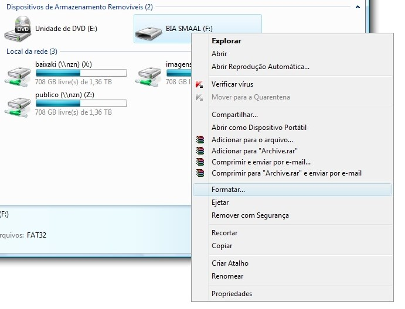
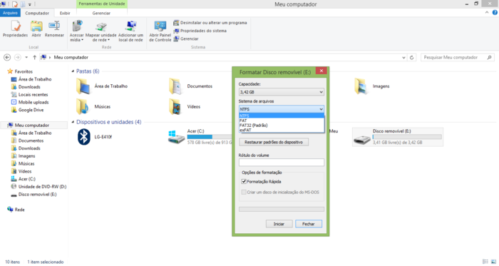
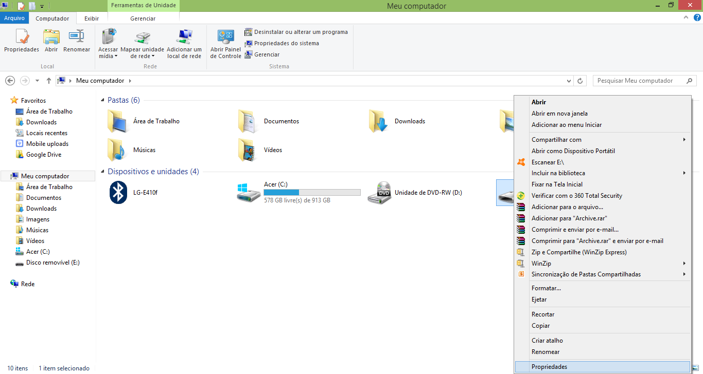
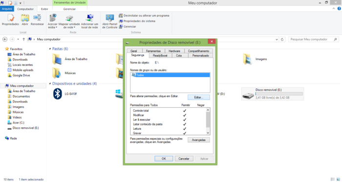
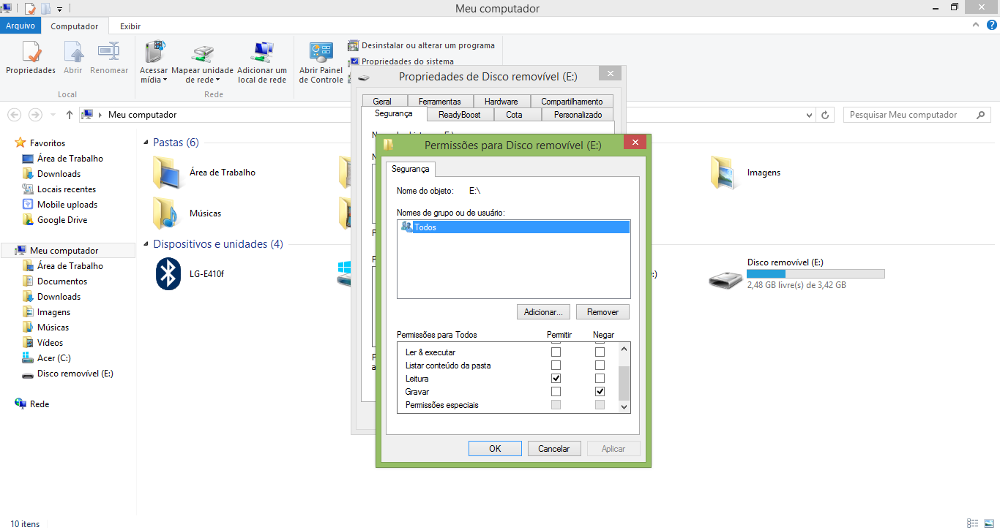
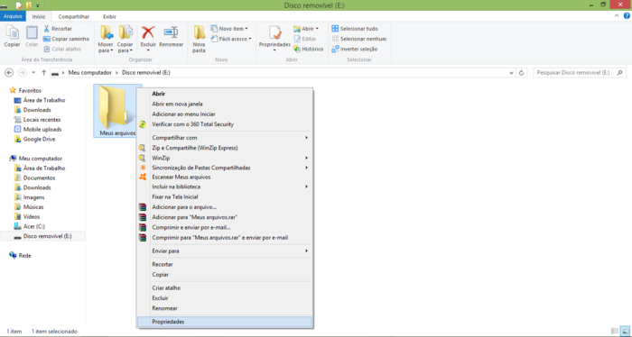
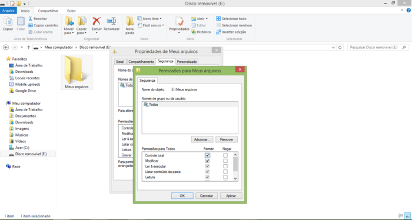

Projeto realizado por alunos do Instituto Federal de Rondônia - Campus Ariquemes, do segundo ano do Curso Técnico em Manutenção e Suporte em Informática.
Welington V. Silva, Weverton R. Anjos, Heloísa S. Barros, Kelvin J. Santos, Kimberly S. Oliveira, Nátally L. Oliveira
Orientadores: Natanael A. V. Simões, Juliane M. Galiano, Luciano Topolniak
Os vírus capazes de infectar o pendrive atuam de duas maneiras:
O método que estamos propondo consiste em realizar o bloqueio da raiz do pen drive para evitar a escrita do autorun.inf ou de atalhos, e a criação de uma pasta única onde todos os dados do usuário serão inseridos.
Para que isto seja possível o sistema de arquivos do pen drive precisa ser configurado como NTFS, porque este sistema permite atribuir configurações de permissão de usuários ao pen drive. NTFS também suporta a compreensão de dados, ou seja, permite economizar espaço em disco quando necessário, além de aumentar o limite do tamanho dos arquivos (no FAT32 era no máximo 4GB por arquivo). Caso não seja NTFS devemos fazer um backup dos arquivos, e então formatar o pen drive para configura-lo como NTFS.
Seguindo com o procedimento devemos criar no pen drive depois de formatado uma pasta e então desabilitar a herança de permissão da raiz do pen drive, que impossibilite criar, alterar ou excluir arquivos na raiz, permitindo apenas a leitura, e então configurar a pasta criada para todas as permissões exceto que outros possam alterar permissões configuradas ou apropriar-se, sendo esta pasta o local onde o dono do pen drive passará a armazenar seus arquivos.
Vá em MEU COMPUTADOR e Clique com o botão direito do mouse no ícone do pen drive e assim que a página abrir Vá em FORMATAR.

Quando esta janela abrir, vá em "SISTEMAS DE ARQUIVOS" e o modifique para NTFS. Caso queira mudar o nome do pen drive, vá em "RÓTULO DO VOLUME" e escreva o nome desejado. Click em FORMATAÇÃO RÁPIDA e em seguida em OK. Depois da formatação for concluída, crie uma pasta em seu pen drive.

Depois vá em MEU COMPUTADOR, clique com o botão direito no ícone do pen drive e vá em PROPRIEDADES.

Assim que abrir esta janela, clique em SEGURANÇA e depois em EDITAR.

Quando a janela abrir vá em PERMISSÕES PARA TODOS e acione em PERMITIR somente a opção LEITURA e desabilite quaisquer outras que estejam na coluna de PERMITIR, após isso vá na coluna NEGAR e acione a opção "GRAVAR" e em seguida clique em APLICAR. Qualquer outra página que abrir é só clicar em CONTINUAR e OK.

Lembra da pasta que criamos após a formatação? Então, clique com o botão direito sobre ela e vá em PROPRIEDADES. Quando abrir a página solicitada, clique em SEGURANÇA e depois em EDITAR.

Quando abrir "Permissões para Meus Arquivos" vá em PERMISSÕES PARA TODOS e acione em PERMITIR a opção CONTROLE TOTAL. Apenas clique em OK e este procedimento estará concluído.

Assim que o procedimento for concluído seu pendrive estará protegido de vírus, pois o vírus foi bloqueado de ser executado na raiz do pendrive. Todas as tarefas que o usuário for realizar será dentro da pasta que foi criada, pois assim como as permissões foram alteradas, e não poderão mudar novamente, o vírus, portanto não conseguirá fazer essa modificação nem o usuário.